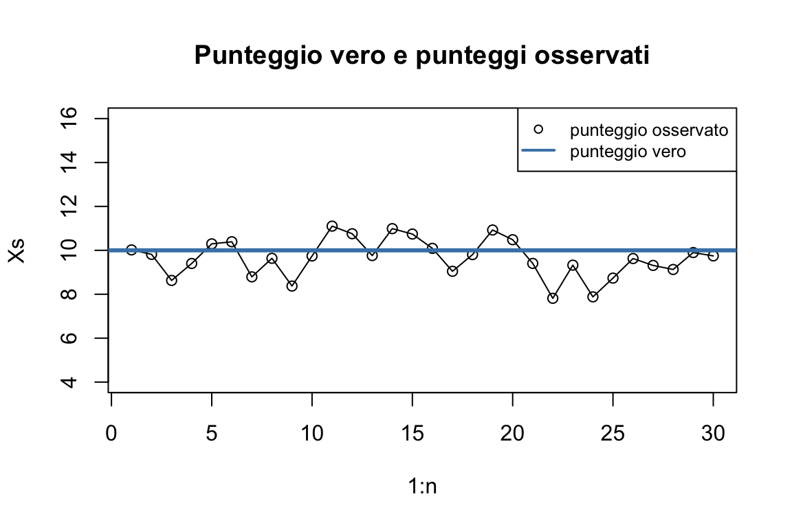
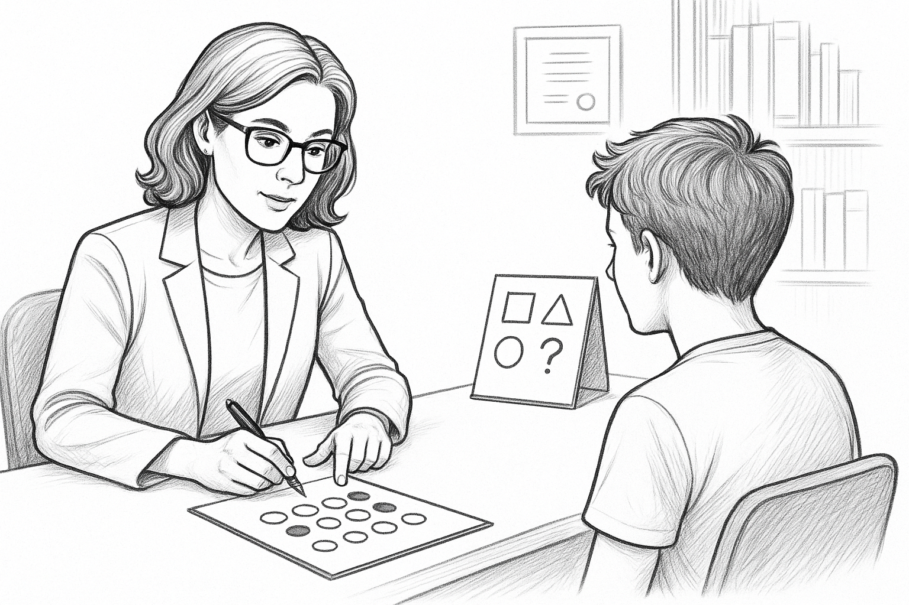
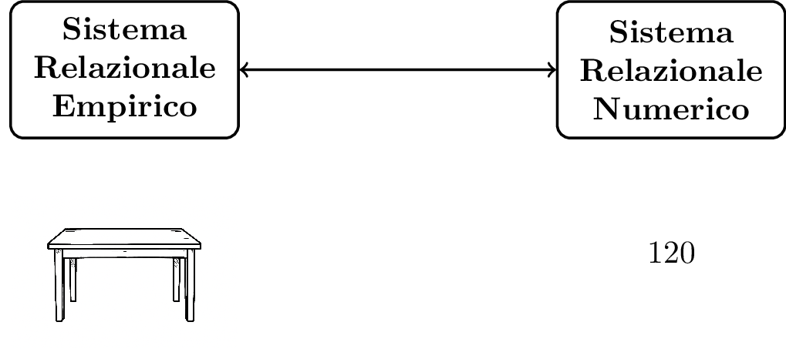
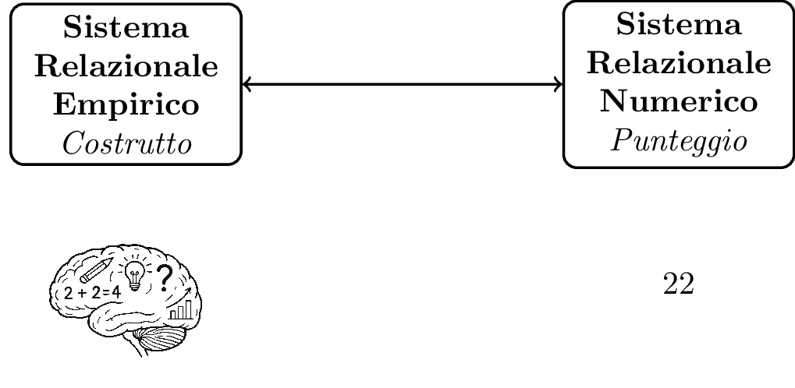
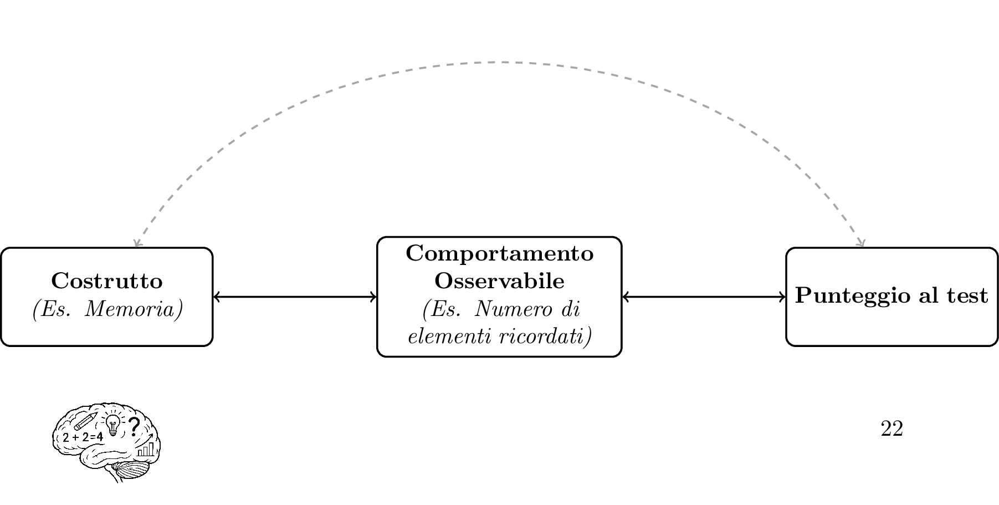
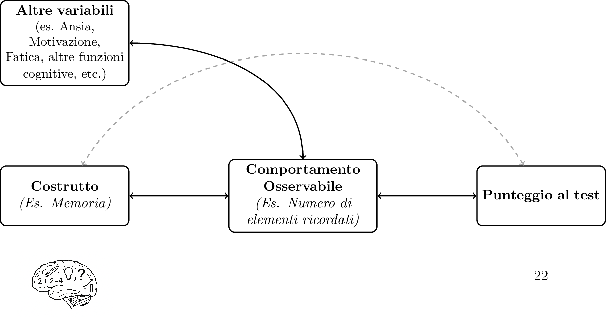

1 Psicometria per la neuropsicologia clinica
1.1 Perché è importante misurare?
Un intero capitolo dedicato alla misurazione non può che iniziare da una possibile definizione di cosa si intende appunto per misurazione:
La misurazione è l’utilizzo di numeri per descrivere delle entità di interesse.
Come vedremo nel prossimo paragrafo, esistono svariate possibili definizioni di misurazione, con implicazioni non banali, ma accontentiamoci per il momento di questa sopra per fare alcune prime considerazioni. Innanzitutto, misurare quasi sempre è associato all’ottenimento di numeri, cioè punteggi, che ci aiutano nella descrizione di qualcosa. Queste entità di interesse in neuropsicologia sono di diverso tipo, ma il più delle volte sono funzioni cognitive, come attenzione o memoria.
Per misurare utilizziamo i test cioè specifici strumenti sviluppati appositamente in ambito psicologico e neuropsicologico. Anche i test saranno oggetto di un paragrafo dedicato
Prima di cominciare ad entrare in tutti i dettagli è importante soffermarsi su una domanda fondamentale:
Perché è importante misurare?
Non possiamo dare per scontato che sia una cosa necessaria o indispensabile e anzi, è utile riflettere sull’utilità di utilizzare numeri per descrivere qualcosa.
La misurazione è innanzitutto considerata una delle basi del metodo scientifico e un approccio scientifico e basato sull’evidenza, non può che passare dalla misurazione. Un celebre aforisma (probabilmente apocrifo) di Galileo Galilei, uno dei padri del metodo scientifico è: misura ciò che puoi misurare, rendi misurabile ciò che non lo è . Anche ogni libro che parli di epistemologia, cioè la filosofia della scienza, tende ad avere un capitolo o una sezione dedicata alla misurazione, a sostegno di quanto sia fondamentale per il processo scientifico (Boniolo & Vidali, 1999). In breve quindi:
misurare in neuropsicologia clinica ci permette di adottare un approccio scientifico e andare oltre la semplice osservazione clinica qualitativa
Fermiamoci adesso un attimo a riflettere su quale è lo scopo di una valutazione neuropsicologica. Lo scopo potrebbe essere l’accertamento sul sospetto di una patologia in corso (es. un sospetto di demenza, sospetto di ADHD), o la caratterizzazione di un disturbo cognitivo in una condizione accertata (es. capire se un trauma cranico ha avuto delle conseguenze). Le informazioni possono avere fini diagnostici, prognostici, o di monitoraggio longitudinale. Nel caso di monitoraggio longitudinale questo in genere è effettuato per investigare il decorso di una patologia nel tempo o per valutare l’effetto di un trattamento riabilitativo. La misurazione è utile perché ci permette dunque di avere più informazioni rilevanti per la valutazione neuropsicologica e di risultati più oggettivi1.
Ma effettuare delle misurazioni ci è utile anche per altro: utilizzare dei punteggi ci permette di creare una sorta di linguaggio comune per la discussione di un caso clinico. Oltre ad alcune etichette cliniche diffuse in certi ambiti, come decadimento cognitivo lieve, decadimento cognitivo moderato, i punteggi ai test rappresentano infatti un’opportunità per comunicare rapidamente lo stato di un individuo. Per esempio per chi lavora in ambito di disturbi cognitivi nell’ambito delle demenza, dire che un paziente ha un MMSE (MiniMental State Examination; (Folstein et al., 1975)) pari a 12, denota senza bisogno di ulteriori dettagli uno stato di decadimento cognitivo piuttosto grave. Questo aspetto è approfondito nel paragrafo “Focus: utilizzare i punteggi per comunicare”.
È inoltre importante notare che in alcune branche della psicologia clinica l’utilizzo di punteggi e la misurazione non sono considerati necessari o fondamentali. Si pensi ad esempio ad approcci come la psicoanalisi, o alcuni approcci costruttivisti alla psicoterapia. Entrambi non fanno quasi uso di strumenti di misurazione e i test hanno spesso un ruolo nullo o marginale. Quando si parla però di neuropsicologia clinica o di valutazione neuropsicologica, la prima cosa che viene in mente è invece una persona che sta effettuando una serie di test per riuscire a comprendere lo stato cognitivo di un individuo e una serie di punteggi ottenuti da questi test: la misurazione sembra un aspetto imprescindibile. Provando a chiedere a ChatGPT4.0 la seguente cosa Crea un disegno in bianco e nero di una neuropsicologa che sta effettuando una valutazione neuropsicologica il risultato che ho ottenuto (14/09/2025) è la figura qui di seguito: una persona che sta somministrando un test, verosimilmente per misurare qualche aspetto del funzionamento cognitivo della persona esaminata.

In altre parole, la neuropsicologia clinica come disciplina presuppone che la misurazione degli oggetti di interesse (funzionamento cognitivo, rischio di sviluppare una malattia, ecc.) consenta di raggiungere conclusioni diagnostiche migliori, di fare scelte terapeutiche più efficaci e, in generale, di svolgere una migliore attività clinica (si veda il paragrafo “Epistemologia della neuropsicologia clinica” per ulteriori dettagli). La misurazione, cioè l’utilizzo di punteggi, ci aiuta a quantificare delle proprietà di interesse e poter fare delle scelte cliniche più precise rispetto al solo utilizzo della osservazione clinica qualitativa e basate su evidenze scientifiche. Il più delle volte questo implica che i punteggi sono confrontati con delle soglie e se i valori sono al di là di queste soglie, viene concluso che il risultato ha rilevanza clinica (useremo più avanti termini più tecnici e definizioni più precise). La persona con il punteggio al di là della soglia potrebbe avere un deficit cognitivo, o forse un rischio di avere una patologia neurodegenerativa o un disturbo del neurosviluppo.
Va da sé, che se questo è uno dei presupposti della neuropsicologia clinica come disciplina, effettuare correttamente le misurazioni è un primo aspetto fondamentale che determinerà la qualità della nostra attività clinica.
1.2 Misurazione e neuropsicologia clinica
La disciplina che si occupa della misurazione in psicologia (e in neuropsicologia) è la psicometria, una delle discipline che, insieme alla statistica, rappresentano le fondamenta di questo libro. La psicometria si occupa proprio delle questioni della misurazione in psicologia, una tipologia di misurazione molto particolare perché non tratta di proprietà di oggetti fisici ma di costrutti, cioè concetti psicologici non osservabili.
Definizione
Costrutto: Un concetto psicologico non direttamente osservabile (es. memoria, attenzione, intelligenza). Per renderlo misurabile, è associato ad uno o più indicatori (o proxy in inglese).
Indicatore Un comportamento osservabile che, da solo o insieme ad altri, si assume sia manifestazione di un costrutto a cui è associato. In neuropsicologia clinica, sono tipici indicatori le risposte ad un test.
Il fatto che i costrutti siano proprietà non osservabili non è di per sé un problema insormontabile ed è comune in vari ambiti diversi da quello psicologico. Per esempio, si pensi, al campo magnetico prodotto da un oggetto, o alla sua temperatura, entrambe proprietà non direttamente osservabili ma misurabili attraverso indicatori fisici.
Consideriamo il classico termometro con colonnina di galinstan (un tempo a mercurio). La temperatura del nostro corpo non è direttamente osservabile ma possiamo misurarla grazie a un indicatore fisico osservabile: l’espansione di una colonna di un metallo liquido (galinstan o mercurio) all’interno del termometro. Quando la temperatura aumenta, il liquido si espande e la sua variazione in lunghezza viene trasformata in un numero che rappresenta la proprietà fisica che ci interessa, cioè la temperatura. Nessuno mette in dubbio la bontà di questa misurazione perché diamo per scontata con precisione la relazione fisica tra la temperatura e l’espansione del metallo.
La misurazione psicologica funziona in modo analogo, con indicatori osservabili (es. le risposte a un test), associati a costrutti non osservabili che intendiamo misurare. La psicometria, come disciplina, si occupa proprio di come rendere questa relazione il più precisa e giustificata possibile (questo esempio è ripreso e approfondito anche nel paragrafo “i test”).
Una caratteristica peculiare della misurazione psicologica è infatti che la relazione tra ciò che è l’esito della misura (cioè il punteggio) e ciò che si vuole misurare, cioè il costrutto, è molto indiretto. Nel suo manuale “Neuropsychological Assessment”, Muriel Lezak, una delle persone più influenti nella neuropsicologia clinica riporta questo passaggio (di Sivan & Benton, 1999) molto esplicito a riguardo.
“Le abilità cognitive (e le disabilità) sono proprietà funzionali dell’individuo che non vengono osservate direttamente, ma piuttosto inferite dal comportamento. Ogni comportamento (compresa la performance nei test neuropsicologici) è determinato da molteplici fattori: l’insuccesso di un paziente in una prova di ragionamento astratto può non dipendere da un deficit specifico nel pensiero concettuale, ma da un disturbo dell’attenzione, da una difficoltà verbale o dall’incapacità di discriminare gli stimoli della prova.” (Sivan & Benton, 1999)
In breve:
Non esiste una corrispondenza univoca tra un comportamento e uno specifico aspetto del funzionamento cognitivo (normale o deficitario). Quasi per definizione ogni comportamento è riconducibile a più funzioni cognitive.
È importante sottolineare che in neuropsicologia clinica non si effettuano solo misurazioni di costrutti. In numerosi casi infatti i punteggi hanno un diverso scopo, come stimare la probabilità di sviluppare una patologia neurologica, la probabilità di sviluppare sintomi comportamentali, o semplicemente predire quale potrebbe essere il punteggio di un test particolarmente lungo a partire da un test più breve. Distinguere tra questi casi è rilevante perché alcuni metodi psicometrici e alcune considerazioni statistiche valgono solo per i test che misurano costrutti oppure solo per i test che non misurano costrutti. Tutti questi aspetti saranno approfonditi nei paragrafi e capitoli successivi
1.2.1 La definizione di misurazione di S.S. Stevens (1946) e le scale di misura
La più famosa definizione di misurazione è certamente quella di S.S. Stevens, che in un articolo del 1946 ha fornito una definizione che ha influenzato (nel bene e nel male) la storia della psicologia:
Definizione
Misurazione secondo Stevens
“…possiamo dire che la misurazione, nel senso più ampio, è definita come l’assegnazione di numeri a oggetti o eventi secondo determinate regole.” (Stevens, 1946) - p. 667
La proposta di Stevens va contestualizzata al clima del momento. Alla fine degli anni quaranta si stava discutendo in ambito scientifico se gli oggetti di interesse della psicologia potessero essere misurati e se, quindi, la psicologia potesse essere considerata una scienza. L’iniziale conclusione di una commissione internazionale di fisici e psicologi che si era riunita per dare una risposta a questa domanda era arrivata alla conclusione che, secondo una definizione rigorosa di misurazione, la risposta era no. Secondo Stevens però, il problema era proprio nei presupposti della commissione e, più in particolare, nella definizione troppo restrittiva di misurazione. Propose dunque la definizione riportata sopra, e sottolineò che anche se ogni regola porta a misurazione, un aspetto importante (ma separabile) è l’utilizzo che si può fare dei numeri o classificazioni e questo dipende dalla Scala di misura. A seconda delle proprietà misurate potrebbe quindi essere diverso l’utilizzo che possiamo fare dei numeri. La proposta di Stevens salvava la psicologia come scienza e anzi aiutava a chiarire l’utilizzo dei numeri per la misurazione in diverse circostanze.
Esistono quattro scale di misura: categoriale, ordinale, a intervalli, a rapporti. Queste scale possono essere organizzate gerarchicamente (categoriale al livello più basso, a rapporti al livello più alto), e le operazioni possibili ad un livello più basso sono possibili a tutti i livelli superiori. Per esempio calcolare la mediana è possibile a livello di scala ordinale, ma anche nella scala ad intervalli e a rapporti in quanto più alte nella gerarchia. Da notare che anche il solo rilevare se una persona è femmina o maschio è, secondo la definizione di Stevens, un caso di misurazione, utilizzando una scala categoriale. In questo caso non hanno senso operazioni tipo addizione o sottrazione o moltiplicazione (non ha senso dire che una femmina è due volte un maschio o viceversa) e una delle poche operazioni possibili è contare quanti casi abbiamo per ogni categoria (es. confrontare il numero di femmine con il numero di maschi). Un riassunto delle scale e delle operazioni possibili è riportato nella tabella 1.2.
| Scala | Descrizione | Esempio | Operazioni possibili |
|---|---|---|---|
| Nominale | Classificazione in categorie senza ordine implicito | Sesso (M/F), Colori, Nazionalità | Conteggio, moda, verifica uguaglianza/differenza |
| Ordinale | Classificazione con ordine, ma le distanze tra categorie non hanno significato | Posizione in una classifica, Titolo di studio | Ordinamento, mediane, percentili |
| Intervallo | Misura con ordine e intervalli uguali, ma senza zero assoluto significativo | Temperatura in °C, IQ | Addizione, Sottrazione,Media, Deviazione standard, z-score |
| Rapporto | Misura con ordine, intervalli uguali e lo zero ha un significato | Età, Scolarità in anni, tempi di reazione | Tutte le operazioni aritmetiche (×, ÷, +, −), z-score, rapporti |
Legenda
- Scala: tipo di misura secondo la classificazione di Stevens.
- Descrizione: caratteristiche principali della scala.
- Esempio: variabili reali che rientrano in quella scala.
- Operazioni possibili: trasformazioni matematiche e statistiche consentite dai dati.
L’idea di avere una definizione di misurazione molto generica, accompagnata ad una distinzione di scale di misura è molto potente e tuttora è molto influente nella misurazione in psicologia. Come anticipato, però, ci sono anche altre definizioni. Nel prossimo paragrafo sarà approfondita una di queste, che entrava in contrasto con la proposta di Stevens.
1.2.2 Definizione di Misurazione secondo Suppes e Zinnes (1963)
Un’altra possibile definizione di misurazione, molto celebre in psicometria è quella di Suppes e Zinnes (\cite{suppes1963basic}). A differenza di quella di Stevens è più rigorosa e formale, ma anche più complessa e meno intuitiva e per essere capita necessita alcune definizioni preliminari.
Definiamo Sistema Relazionale Empirico, come l’insieme di entità del mondo empirico che hanno una determinata proprietà che vogliamo misurare (es. oggetti di diversa lunghezza) e il Sistema Relazionale Numerico un insieme di numeri (es. i numeri Reali) con i quali vogliamo descrivere il sistema Relazionale Empirico.

Definizione
Misurazione secondo Suppes e Zinnes (1963)
La misurazione consiste in un omomorfismo tra un Sistema Relazionale Numerico e un Sistema Relazionale Empirico.
Con omomorfismo si intende una corrispondenza tra i due sistemi che preserva le relazioni tra gli elementi. Ad esempio, se nel Sistema Relazionale Empirico abbiamo una relazione di ordine (ad esempio, l’oggetto A è più lungo dell’oggetto B), allora questa relazione deve essere preservata nel Sistema Relazionale Numerico (il numero associato all’oggetto A deve essere maggiore del numero associato all’oggetto B).
Nell’esempio della Figura 1.2, un tavolo ha un lato lungo 120 cm. Possiamo usare questo numero (120) per numerosi utilizzi. Supponiamo ad esempio di avere due tavoli quadrati, uno con il lato di 120 cm e uno con il lato di 60 cm. Tramite questa misurazione del loro lato, sappiamo che il tavolo con lato 120 cm è più lungo di quello con lato 60 cm. Sappiamo che il tavolo con lato 120 cm ha il lato di 60 cm più lungo di quello con lato 60 cm. Infine sappiamo che il tavolo con lato 120 cm è lungo il doppio del tavolo con lato 60 cm (nello stesso spazio del tavolo lungo 120 cm, possiamo mettere due tavoli da 60 cm). Questi numeri ci permettono dunque di una serie di operazioni utili per comprendere le proprietà dei tavoli, in questo caso la loro lunghezza, e interagire con loro2. La stessa cosa accade quando vogliamo fare una misurazione psicologica o neuropsicologica: lo scopo è ottenere un numero che vogliamo utilizzare per alcuni scopi (si veda Figura 1.3).

In questo caso possiamo dire che il nostro Sistema Relazionale Empirico3 è dato dall’insieme di tutti i possibili livelli di memoria e il Sistema Relazionale Numerico come l’insieme di numeri che utilizziamo per descrivere questi livelli memoria. Alcune operazioni con questi numeri sono intuitivamente sensate, ad esempio possiamo dire che alcune persone hanno più memoria di altre (possiamo quindi ordinare), ma nel momento in cui cerchiamo di capire l’applicabilità di altre operazioni diventa più difficile rispondere. Ad esempio, tramite un test possiamo arrivare a dire che una persona ha il doppio di memoria di un altra? Oppure che ha +20 unità di memoria più di un’altra? (qualsiasi sia questa unità). La risposta non è ovvia, e non possiamo darla per scontata solo perché abbiamo dei numeri. Suppes e Zinnes sostengono che non si possa assumere automaticamente che determinate operazioni sui numeri abbiano un senso. Occorre invece verificare che il sistema numerico rappresenti adeguatamente la struttura delle relazioni empiriche osservate; solo in questo caso le operazioni effettuate sui numeri possono essere interpretate come operazioni dotate di senso sul costrutto misurato4.
1.3 Quale definizione di misurazione adottano i test neuropsicologici?
Visto che esistono diversi modelli di misurazione, viene spontaneo chiedersi quale di essi adottino i test neuropsicologici (specie quelli disponibili in Italia) e quali conseguenze pratiche ne derivino.
La risposta non è semplice: per la maggior parte dei test, il modello di misurazione sottostante non viene mai dichiarato esplicitamente. Tuttavia, se facciamo un ragionamento al contrario e cerchiamo di desumerlo a partire dall’utilizzo che si fanno dei punteggi, possiamo dire che implicitamente si assuma la definizione di Stevens e che la misura sia su scala ad intervalli.
Importante
Nella maggior parte dei test neuropsicologici si assume implicitamente che la misura sia su scala a intervalli.
Ricordiamo che assumere una scala ad intervalli significa che le differenze tra punteggi hanno un significato costante lungo tutta la scala. Un esempio classico è la temperatura in gradi Celsius: un aumento di 2°C ha lo stesso significato indipendentemente dal valore di partenza (che si passi da 36° a 38° o da 38° a 40°, in entrambi i casi la variazione è identica).
Proviamo però ad applicare lo stesso ragionamento a qualche test neuropsicologico, in maniera intuitiva. Prendiamo ad esempio il MoCA (Nasreddine et al., 2005), uno strumento di screening cognitivo con punteggio da 0 a 30. Se fosse davvero misurato su una scala a intervalli, un aumento di 2 punti dovrebbe avere lo stesso significato sia partendo da 24 sia partendo da 28. Eppure un aumento da 28 a 30 porta a un punteggio perfetto, mentre uno da 24 a 26 indica due diversi livelli di prestazione media/medio-alta5. Per chi conosce il test è quantomeno discutibile sostenere che le due variazioni abbiano lo stesso significato.
Lo stesso vale per il Digit Span, test in cui si chiede di ricordare sequenze di numeri di lunghezza crescente e il punteggio corrisponde alla sequenza più lunga correttamente richiamata. Un aumento di 2 punti da 3 a 5 segna il passaggio da una prestazione molto bassa a una intermedia; un aumento da 8 a 10 porta invece da una prestazione già eccellente a una quasi irraggiungibile (provate a ricordare una sequenza di 10 cifre per capire). Anche qui le due variazioni potrebbero non sembrare equivalenti.
Questi esempi, per quanto informali, mostrano come interpretare i punteggi grezzi di un test come se fossero su scala a intervalli non si possa dare per scontato. Eppure, la maggior parte dei test neuropsicologici non riporta evidenze o non effettua verifiche che mostrino l’effettiva adeguatezza dell’utilizzo di una scala ad intervalli.
Chi ha già utilizzato test neuropsicologici in ambito clinico potrebbe obiettare che il problema è di scarsa rilevanza pratica, almeno quando i test vengono usati semplicemente per stabilire se un punteggio è al di sopra o al di sotto di una soglia di deficit: in quel caso non si effettuano addizioni o sottrazioni, ma ci si limita a confrontare il punteggio con un valore di riferimento (questo argomento sarà trattato in dettaglio nel Capitolo 2). Tuttavia, vi sono situazioni in cui operazioni che implicano una scala ad intervalli entrano in gioco anche nella pratica quotidiana. Un esempio tipico sono le correzioni per età e scolarità, trattate nel capitolo 2 e nell’approfondimento sulle regressioni: queste correzioni consistono nell’aggiungere o sottrarre un valore al punteggio grezzo, operazioni che hanno senso solo su una scala ad intervalli. Anche molti dei metodi utilizzati per misurare cambiamenti nel tempo (vedi paragrafo ), spesso assumono una scala ad intervalli, con implicazioni non banali sull’interpretazione dei risultati. L’aspetto più delicato di questa discussione è che il trattare i punteggi come se fossero su una scala ad intervalli è una sorta di punto di partenza e un’assunzione implicita non dimostrata, piuttosto che qualcosa verificata empiricamente (come Suppes e Zinnes suggeriscono nel loro modello di misurazione). Anche se quanto appena detto potrebbe sembrare una speculazione da psicometristi, con poco impatto pratico, nel corso di questo libro cercherò di dimostrare che non lo è, e che anzi, in certi casi è una semplificazione che non possiamo dare per scontata.
È doveroso anticipare già adesso che non sempre i test psicologici soffrono di queste problematiche. Alcuni infatti sono costruiti in modo tale che il significato delle variazioni di punteggio sia formalmente definito e preciso, grazie all’impiego di modelli alternativi di misurazione, ad esempio quelli appartenenti all’ Item Response Theory. Purtroppo, per ragioni pratiche e storiche, strumenti con tali caratteristiche sono ancora poco diffusi nella pratica neuropsicologica italiana, e dobbiamo quindi accontentarci di test che assumono una scala ad intervalli, con tutte le problematicità evidenziate (si veda il paragrafo Introduzione all’Item Response Theory per un approfondimento).
Devo però anche anticipare che adotterò una posizione molto pragmatica su questo aspetto. Anche quando alcune assunzioni di un test risultano discutibili, ciò non significa che il test vada scartato: uno strumento con limitazioni può essere comunque più utile di una valutazione clinica puramente qualitativa.
Ricapitolando: la maggior parte dei test neuropsicologici adotta implicitamente la concezione della misurazione proposta da Stevens e tratta i punteggi come misure su scala a intervalli, senza però esplicitare o verificare l’adeguatezza di tale assunzione. Gli esempi forniti sul MoCA e del Digit Span mostrano come questa assunzione non si possa però dare per scontata con leggerezza. Va tuttavia chiarito che il neuropsicologo non deve porsi quotidianamente il problema della scala di misurazione, a meno che non decida di effettuare operazioni sui punteggi al di là di quelle previste dalla pratica clinica standard. Il messaggio centrale è: ottenere dei numeri non ci autorizza a fare di essi ciò che vogliamo. Alcune operazioni, pur tecnicamente possibili, possono essere delicate o problematiche, e sapere che derivano da un’assunzione discutibile è fondamentale per un’interpretazione consapevole dei punteggi.
Abbiamo parlato a lungo di misurazione, ma lasciamo adesso spazio a quelli che sono gli strumenti di misurazione in neuropsicologia: i test.
1.4 I test
Già dall’introduzione è stato detto che il protagonista assoluto del libro è il test neuropsicologico. Ma cos’è un test? Come sempre, non possiamo non procedere senza fornire una definizione precisa che ci aiuti a definire cosa è un test (e cosa non lo è) e quali sono le caratteristiche che lo contraddistinguono.
Esistono in letteratura numerose definizioni di test e, come spesso accade in psicometria, non esiste un consenso unanime su quale sia la più adeguata. Una delle più influenti in ambito psicologico è quella proposta da Lee Cronbach nel suo manuale sul testing psicologico:
Definizione
Test secondo Cronbach (1990)
“Un test è una procedura sistematica per l’osservazione del comportamento di una persona e per la sua descrizione con l’aiuto di una scala numerica o tramite categorie prefissate.” (Cronbach, 1990) (p. 32)
Fermiamoci a riflettere un attimo sui vari aspetti catturati da questa definizione:
“Un test è una procedura sistematica …”
Questa parte della definizione sottolinea che un test non è semplicemente un insieme di materiali, ma è un processo ben definito e una “procedura”, cioè una sequenza di passaggi che devono essere seguiti affinché si possa dire che è stato somministrato esattamente quel test.
“… per l’osservazione del comportamento …”
In questa seconda parte della definizione, viene sottolineato quanto già detto riguardo la misurazione psicologica: i test psicologici si basano sull’osservazione di comportamenti.
“… e per la sua descrizione con l’aiuto di una scala numerica o tramite categorie prefissate.”
In quest’ultima parte della definizione, è catturata l’essenza dell’esito di una misurazione: un punteggio o l’appartenenza ad una categoria (es. “sano”, “Mild Cognitive Impairment”).
Nota
Il fatto che un test sia una procedura sistematica implica che, per somministrarlo correttamente, occorre attenersi scrupolosamente alla procedura originale: quella indicata dagli autori, nel manuale del test o nella pubblicazione scientifica di riferimento. Anche una deviazione apparentemente piccola può avere un impatto rilevante sui risultati e sulla loro interpretazione, producendo effetti a cascata difficili da prevedere. Per esempio, modificare leggermente le istruzioni, anche con il nobile intento di essere più chiari, può rendere il test più facile e alterare il significato del confronto con i dati normativi (si veda il paragrafo sui dati normativi).
Questa definizione ha il vantaggio di essere ampia e inclusiva: si applica tanto ai test cognitivi quanto ai questionari di personalità, alle scale di autovalutazione e a molti altri strumenti di misura in ambito psicologico. Tuttavia, presenta un limite importante per i nostri scopi, che è facile identificare con un esempio. Provate a immaginare uno strumento che valuti l’equilibrio di una persona durante il cammino tramite una serie di prove fisiche. Per ogni prova superata si dà un punteggio di 1, e il punteggio globale è dato dalla somma dei punteggi delle varie prove. Questo strumento soddisferebbe formalmente la definizione di Cronbach: è una procedura sistematica, per osservare il comportamento e lo descriverebbe con una scala numerica (il punteggio totale). Tuttavia, questo strumento non sarebbe un test “psicologico”.
La definizione di Cronbach è utile quindi perché permette di sottolineare, tramite una mancanza, un punto fondamentale che contraddistingue i test psicologici: a differenza di altri tipi di test, i test psicologici non hanno quasi mai interesse solo nel comportamento osservato (le risposte del paziente agli item del test) ma nel costrutto psicologico che si vuole misurare (vedi paragrafo precedente). Il punteggio è dunque una rappresentazione indiretta di qualcosa di non direttamente osservabile (memoria, attenzione, funzioni esecutive, ecc.), tramite un comportamento osservabile. Questa relazione è rappresentata nella Figura 1.4.

Da notare che quanto appena detto è, in sostanza, quello che abbiamo già trattato nel paragrafo “misurazione e neuropsicologia clinica”. Riprendiamo l’esempio della misurazione con un termometro e approfondiamolo. La situazione di una misurazione indiretta in psicologia potrebbe sembrare non troppo diversa da quella dell’esempio del termometro: del resto anche la temperatura non è direttamente osservabile, ma è legata a un indicatore osservabile (l’espansione del galinstan o mercurio) che ci permettono di ottenere un numero (i gradi) che rappresenta indirettamente ciò che vogliamo misurare. Nonostante questa apparente somiglianza, la misurazione in neuropsicologia, e in psicologia in generale, è molto più complessa. Senza scendere troppo nei dettagli la ragione è che la relazione tra costrutto psicologico e indicatore è molto più complessa di quello che accade con gli indicatori osservabili di misurazioni fisiche. Più nello specifico non esiste una relazione causale univoca tra proprietà non osservabile e comportamento osservabile: avere una certa memoria non determina in maniera causale che si ottenga un certo comportamento (piuttosto probabilistica, vedi paragrafo “Altri modelli di misurazione”). A complicare le cose, molte variabili non direttamente di interesse possono alterare in maniera importante la relazione tra costrutto e comportamento osservabile (cioè l’indicatore). Sempre in relazione al punteggio al test di memoria si consideri per esempio la motivazione, l’umore, la fatica, la stanchezza, l’ansia, la confusione, la distrazione, la presenza di dolore o di sintomi fisici, e così via. Tutte queste variabili possono influenzare il comportamento osservato (le risposte al test) e di conseguenza il punteggio ottenuto, indipendentemente dal costrutto di interesse (la memoria).

1.4.1 Tipologie di test
Esistono diverse tipologie di test così come diversi modi di poterli classificare. Di seguito vengono descritti i principali tipi di test utilizzati in neuropsicologia clinica. Fornire una classificazione è utile perché diversi tipi di test hanno diverse peculiarità di tipo psicometrico. Nel corso del libro specificheremo quando alcune considerazioni si applicano solo, o prevalentemente, ad un tipo di test.
1.4.1.1 Test di prestazione massima
I test di prestazione massima (maximal performance tests) sono strumenti in cui si chiede al paziente di impegnarsi al massimo delle proprie capacità per ottenere il miglior risultato possibile. L’obiettivo è valutare cosa una persona è in grado di fare quando le condizioni sono ottimali e lo sforzo è massimo. La maggior parte dei test neuropsicologici per la valutazione delle funzioni cognitive (test di memoria, attenzione, funzioni esecutive, linguaggio, abilità visuospaziali) rientra in questa categoria. Il punteggio ottenuto è interpretato come una stima della capacità massima del paziente in quel dominio cognitivo.
1.4.1.2 Test di comportamento tipico
I test di comportamento tipico (typical behaviour tests) sono invece strumenti progettati per valutare come una persona si comporta o risponde tipicamente, ovvero nel suo quotidiano, non necessariamente con un sforzo massimo. In questi strumenti non esiste una risposta “giusta” da dare. Rientrano in questa categoria due grandi famiglie di strumenti:
- Autosomministrati (compilati dal paziente stesso): questionari di personalità, scale di autovalutazione per sintomi psicologici come ansia e depressione (es. Beck Depression Inventory (Beck et al., 1961), Hamilton Anxiety Scale (Hamilton, 1959)), scale per la qualità della vita. Il paziente descrive come si sente o come si comporta generalmente.
- Eterosomministrati (compilati dal clinico o da un caregiver): scale per la valutazione del funzionamento nelle attività quotidiane, come le ADL, Activities of Daily Living; (Katz et al., 1963) e le IADL, Instrumental Activities of Daily Living (Lawton & Brody, 1969). In questo caso è il clinico o un familiare a rispondere sulla base dell’osservazione diretta del paziente, non il paziente stesso.
La distinzione tra questi due tipi di test è rilevante per la somministrazione, per l’interpretazione dei punteggi e per il tipo di costrutto che si intende misurare.
1.4.1.3 Altri strumenti utili per la valutazione neuropsicologica
Nella pratica clinica, accanto ai test di prestazione massima e ai questionari di comportamento tipico, esiste una terza categoria di strumenti che fanno parte della valutazione neuropsicologica standard pur non rientrando in senso stretto nella classificazione fin qui descritta: si tratta di questionari e scale somministrate come parte integrante della valutazione clinica, non per misurare una funzione cognitiva o altri costrutti psicologici legati a comportamenti abituali, ma per raccogliere informazioni contestuali utili per l’interpretazione dei risultati.
L’esempio più rilevante in ambito neuropsicologico e che negli ultimi anni ha avuto sempre più utilizzo è la stima della riserva cognitiva. La riserva cognitiva, cioè la capacità del cervello di compensare per i danni di una la patologia degenerativa o acuta senza manifestare sintomi espliciti, è considerata una variabile moderatrice importante nell’interpretazione delle prestazioni cognitive, soprattutto nelle valutazioni legate a patologie neurodegenerative. Per stimarla si utilizzano strumenti come il CRIq (Cognitive Reserve Index questionnaire; Nucci et al., 2012), un questionario in cui si raccolgono informazioni su anni di istruzione, attività lavorativa e attività del tempo libero nel corso della vita. Il CRIq non è un test di prestazione massima: non si chiede al paziente di fare del proprio meglio su un compito, ma di riportare informazioni anamnestiche strutturate.
Questi strumenti condividono con i test psicologici il fatto di produrre un punteggio numerico, e rientrano quindi nella definizione di test di Cronbach.
1.4.2 Questo è un buon test?
La definizione di Cronbach, pur essendo ampia e inclusiva, lascia aperta una domanda importante: qualunque strumento che assegni numeri a comportamenti osservati può essere considerato un buon test? Consideriamo il seguente test ipotetico per la memoria:
Al paziente viene letta ad alta voce la seguente lista di 7 parole: casa, mela, treno, fiume, cane, libro, sole. Dopo 30 secondi, gli viene chiesto di ricordare quante più possibili. Il punteggio finale è il numero di parole ricordate (da 0 a 7).
Questo strumento soddisfa formalmente la definizione di Cronbach: è una procedura sistematica, osserva il comportamento (le parole ricordate) e lo descrive con una scala numerica. Soddisfa anche la definizione di Stevens: assegna numeri a eventi secondo regole precise.
Ma questo è davvero un buon test per la memoria?
È verosimile che la vostra risposta “di pancia”, sia stata no, anche se non avete una spiegazione tecnica. Potreste dire per esempio che è troppo semplice, che 7 parole sono poche[^pochiitems], che 30 secondi sono pochi, che le parole sono troppo facili, etc. Tutte queste considerazioni sono ragionevoli e probabilmente condivisibili, ma non sono basate su aspetti tecnici o su effettive verifiche sulla qualità del test. Sono semplicemente basate sul buon senso e sull’esperienza clinica. [^pochiitems]: Il numero di item da solo non è un indicatore della qualità di un test. Esistono test pubblicati e validati anche con pochissimi item: per esempio, esiste una versione a 3 item della UCLA Loneliness Scale per la misurazione (Gosling et al., 2024).
Nel corso di questo libro daremo delle risposte più rigorose a questa domanda. Quello che per ora è importante sottolineare che, anche se questo strumento soddisfa formalmente le definizioni di test e di misurazione, non è detto che sia un buon test: dobbiamo avere altre evidenze per poter dire che questo strumento misura la memoria in modo accurato e preciso.
Esistono diversi framework teorici che hanno cercato di definire questi aspetti fondamentali che definiscono come identificare se un test sta funzionando come dovrebbe e, più in generale, come si dovrebbe costruire un test. Come è possibile immaginare, tutto ciò è spesso strettamente intrecciato a veri e propri modelli di misurazione psicologica. Nel prossimo paragrafo tratteremo il framework più diffuso e utilizzato in neuropsicologia clinica, noto come la Teoria Classica dei Test.
1.5 Teoria Classica dei Test (CTT)
La Teoria Classica dei Test o Classical Test Theory (CTT) è il framework psicometrico su cui si basa la grande maggioranza dei test neuropsicologici attualmente disponibili. Come già visto per altri aspetti psicometrici, spesso non vi è una dichiarazione esplicita di seguire la CTT, ma questo può essere desunto dall’utilizzo di alcune analisi (ad esempio, calcolare la consistenza interna o l’affidabilità test-retest), che ne sono una diretta espressione. Comprendere i presupposti della CTT è quindi fondamentale non solo per chi costruisce test, ma anche per chi li usa nella pratica clinica quotidiana.
1.5.1 Il principio cardine: X = T + E
Il principio fondamentale della CTT è espresso in una formula apparentemente semplice:
Definizione
\(X = T + E\)
\(X\): punteggio osservato (observed score)
\(T\): punteggio vero (true score)
\(E\): errore di misura (error)
Nell’equazione base della CTT, \(X\) rappresenta il punteggio osservato, ovvero quello che si ottiene concretamente somministrando il test a una persona in una specifica occasione. \(T\) è il punteggio vero (true score), cioè la quantità del costrutto che la persona davvero possiede, la sua vera capacità di memoria, attenzione o qualsiasi altro attributo il test intenda misurare. Infine, \(E\) è l’errore di misura (error), la componente casuale che in ogni singola somministrazione porta il punteggio osservato a discostarsi, in più o in meno, dal punteggio vero.
L’idea centrale della CTT è che ogni volta che somministriamo un test otteniamo una stima imperfetta dell’abilità reale della persona: il punteggio osservato \(X\) è la somma di quanto la persona sa o può fare davvero (\(T\)) e di una quota di rumore casuale (\(E\)) che dipende da molte circostanze, anche contingenti (ad esempio la stanchezza del giorno, il livello di ansia durante la valutazione, una distrazione durante le istruzioni, un item che per qualche motivo è risultato più facile o difficile del solito). L’errore, può essere positivo o negativo e varia simmetricamente intorno allo zero. Un altro modo di pensare \(T\) è quello del punteggio che otterremmo se non avessimo alcun errore di misura.
Un’assunzione cruciale è che \(T\) ed \(E\) siano indipendenti tra loro: l’errore non dipende sistematicamente dal punteggio vero della persona. In altre parole, avere un punteggio basso o alto non rende l’errore sistematicamente più grande o più piccolo, è sempre una componente casuale che oscilla intorno allo zero.
Per fare un esempio concreto: supponiamo che il punteggio vero di una persona a un test di memoria, in cui il punteggio va da 0 a 30, sia \(T = 10\). Se il giorno della somministrazione la persona è stanca o ansiosa, potrebbe ottenere \(X = 7\), con un errore \(E = -3\) che ha abbassato il punteggio. Se invece è riposata e particolarmente motivata, potrebbe ottenere \(X = 12\), con \(E = +2\) che lo ha leggermente sovrastimato. In entrambi i casi, il punteggio vero rimane \(T = 10\). Da notare che il possibile errore non sarebbe diverso se il punteggio vero fosse più basso (es. \(T = 5\)) o più alto (es. \(T = 25\)). Il punteggio vero \(T\), che stimiamo a partire dal punteggio osservato \(X\) è la rappresentazione dell’abilità reale, quella che rimarrebbe stabile se potessimo somministrare lo stesso test infinite volte nelle stesse condizioni ideali.
L’idea delle “misurazioni infinite” non è solo un espediente retorico: nella CTT il punteggio vero \(T\) è definito formalmente proprio come il valore atteso (la media) di \(X\) su infinite ripetizioni della misura. Se l’errore \(E\) è davvero casuale e con media zero, come la CTT assume, allora i contributi positivi e negativi dell’errore si cancellerebbero a vicenda su infinite somministrazioni, e la media di tutti i punteggi osservati convergerebbe esattamente a \(T\). In una singola somministrazione non sappiamo se l’errore ci ha penalizzato o favorito; ma l’idea che \(T\) “esista” come limite di questo processo ci dà un fondamento teorico per trattare il punteggio osservato come una stima, per quanto imperfetta, dell’abilità reale.
La Figura 1.6 illustra questa dinamica con una simulazione: trenta somministrazioni ripetute dello stesso test alla stessa persona (punteggio vero \(T = 10\)), con i punteggi osservati che fluttuano attorno alla linea del punteggio vero per effetto dell’errore casuale. Nessuna singola misurazione coincide esattamente con \(T\), ma tutte sono intorno ad esso: è proprio questo che rende \(T\) una sorta di “centro di gravità” della distribuzione dei punteggi osservati.
È importante sottolineare che nella pratica clinica, ciò che vedremo sarà sempre e solo un punteggio osservato e cioè \(X\), molto spesso una singola realizzazione di uno dei possibili punteggi osservati possibili (in riferimento alla Figura 1.6, quello che vedremo è uno solo dei possibili cerchietti). Tale punteggio sarà dunque sempre e solo una stima del punteggio vero \(T\), e non potremo mai sapere con certezza se quell’osservazione è stata influenzata da un errore positivo o negativo, né di quanto.
Questa consapevolezza porta a identificare due obiettivi prioritari nel processo di costruzione di un test: il primo è ridurre al minimo l’errore \(E\), affinché il punteggio osservato sia il più possibile vicino al punteggio vero; il secondo è riuscire a stimare l’entità di quell’errore, in modo da sapere con quale margine di incertezza si sta lavorando quando si interpreta un punteggio. Va da sé, che in neuropsicologia clinica, sarebbe prioritario avere test con il più piccolo errore di misura possibile, in modo da ottenere stime più precise dell’abilità reale dei pazienti e che siano il meno possibile influenzati da fattori contingenti. Questo ci assicurerebbe di avere una stima più accurata del funzionamento cognitivo dei pazienti, migliorando la nostra capacità di diagnosticare deficit, monitorare cambiamenti nel tempo e valutare l’efficacia di interventi riabilitativi.
1.5.2 Limiti della CTT
La CTT, pur essendo il framework dominante e pur avendo dimostrato grande utilità pratica, presenta alcuni limiti intrinseci che è importante conoscere, non per scartare il modello, ma per sapere dove le sue assunzioni devono essere accettate con una certa cautela o quantomeno con consapevolezza.
Il primo limite riguarda il fatto che nella CTT le abilità del soggetto e la difficoltà degli item non sono modellate separatamente. Il punteggio di una persona dipende sia dalla sua abilità sia dalla difficoltà specifica degli item inclusi in quella versione del test: un test composto da item particolarmente difficili abbassa i punteggi di tutti i soggetti, indipendentemente dalla loro abilità reale.
Il secondo limite riguarda l’assunzione di indipendenza tra \(T\) ed \(E\). Questa assunzione, pur ragionevole nella parte centrale della scala, è sistematicamente violata ai valori estremi. Se il punteggio vero di una persona è vicino al massimo del test, l’errore non può distribuirsi liberamente in entrambe le direzioni: la persona non può ottenere un punteggio osservato superiore al massimo, quindi l’errore può solo abbassare il punteggio, mai alzarlo oltre il limite. Lo stesso accade al limite inferiore: il punteggio osservato non può scendere sotto lo zero, per cui l’errore diventa asimmetrico e smette di essere indipendente dal punteggio vero. Ai valori estremi, in altre parole, l’errore stesso dipende da dove si trova la persona nella scala, il che viola direttamente l’assunzione fondamentale del modello.
Torniamo all’ipotetico test di memoria con valori possibili da 0 a 30. Se una persona avesse un punteggio vero \(T=30\), l’errore \(E\) non potrebbe mai essere positivo, perché il punteggio osservato \(X\) non può superare il massimo di 30. Se invece \(T=0\), l’errore non potrebbe mai essere negativo, perché \(X\) non può scendere sotto zero. In entrambi i casi, l’errore è limitato in una sola direzione, e quindi dipende dal valore di \(T\), violando l’assunzione di indipendenza.
Questi limiti non rendono la CTT inutilizzabile, e i test neuropsicologici che ne derivano rimangono strumenti clinicamente preziosi nella pratica quotidiana, ma spiegano perché nel corso degli anni si siano sviluppati modelli di misurazione alternativi.
1.5.3 Riassunto sulla CTT
Abbiamo descritto il principio cardine della CTT e alcune delle sue assunzioni fondamentali. Come anticipato, la maggior parte dei test neuropsicologici adotta implicitamente questo framework e questo lo si desume dalle analisi e dalle metodologie impiegate nel loro sviluppo, più che da una dichiarazione esplicita.
Queste rispondono alla domanda posta in precedenza: come stabilire se un test è un buon test? Secondo la CTT, sono necessarie informazioni sulla validità del test, intesa come giustificazione del legame tra punteggio e costrutto, e sulla sua affidabilità, ovvero la precisione e la consistenza della misura. Questi due concetti costituiscono il nucleo della psicometria nell’ambito della CTT e saranno trattati in dettaglio nei paragrafi successivi.
Nota
Nei manuali o articoli dei test neuropsicologici spesso non è esplicitamente scritto che sono sviluppati secondo la Classical Test Theory. Questo è desumibile però dall’utilizzo di certe caratteristiche, come l’utilizzo di Validità e Affidabilità, secondo specifiche declinazioni tipiche di questo framework.
1.6 Validità ed Affidabilità
1.6.1 Tipi di Validità e perché sono importanti
1.6.1.1 Validità di costrutto
1.6.1.2 Validità concorrente
1.6.1.3 Validità predittiva
1.6.1.4 Validità interna
1.6.1.5 Validità di facciata
1.6.1.6 Validità ecologica
1.7 Affidabilità
1.7.1 Tipi di affidabilità e perché sono importanti
1.7.1.1 Consistenza Interna
1.7.1.2 Affidabilità Test Retest
1.7.1.3 Affidabilità Split-Half
1.7.1.4 Inter-Rater Agreement
1.8 Sviluppo di test secondo CTT
1.9 Oltre la Teoria Classica dei Test
1.10 Nella pratica clinica: Come usare Affidabilità e Validità per scegliere i test
1.11 Nella pratica clinica: Come usare Affidabilità e Validità per interpretare i test
1.12 Errori comuni nel considerare gli aspetti psicometrici dei test.
–>
per oggettivo indichiamo un risultato che non è dipendente da chi sta effettuando l’esame.↩︎
Tornando per un attimo alla Definizione di misurazione di Stevens e alla Tabella 1.2, La lunghezza di un tavolo sarebbe misurata su una scala a rapporti e sapere questo ci permette di sapere quali operazioni possiamo fare con i numeri associati alla misura.↩︎
è importante notare che non tutti sarebbero d’accordo nel dire che l’insieme di costrutti psicologici (cioè concetti non osservabili) sono parte di un sistema relazionale empirico. La domanda è però proprio al confine dell’epistemologia: un concetto psicologico non osservabile è parte del mondo empirico (così come lo sono altri entità non osservabili) oppure no? Per i nostri scopi la diversa collocazione dei concetti psicologici (come entità del mondo empirico o no), è irrilevante. Qui assumo che i concetti psicologici siano di fatti parte dei sistemi relazionali empirici in un certo senso aggirando il problema, e utilizzando la definizione di sistema relazionale empirico come ogni sistema relazionale non numerico.↩︎
questo aspetto è affrontato più in dettaglio nella sezione Approfondimenti tecnici↩︎
per complicare ulteriormente il quadro qualcuno che conosce il MoCA potrebbe anche dire che il significato di questi \(+2\), dipende molto da quale è l’item (o gli item) a cui è legato questo punteggio, questo esempio è trattato in un Approfondimento).↩︎